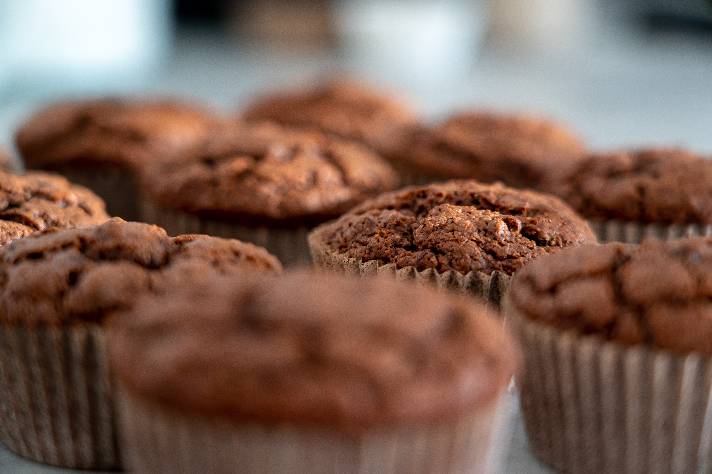

La Pastelería es un emprendimiento iniciado por Profesionales Gastronómicos. Inspirado en una Pastelería Artesanal contemporánea, que en un principio se especializó únicamente en tortas, pero hoy, cuenta con una gran variedad de Minicakes, Brownies, Alfajores, Cup Cakes, Cake Pops, Petit fours y más. Su objetivo es ofrecer un producto de alta calidad, excelente presentación, pero con el sabor de lo casero.
El 1 de Octubre del 2015 abrimos nuestro flamente local en la ciudad de Cordoba.
No dejes de visitarnos, esperamos siempre sorprenderte.
La Pastelería.